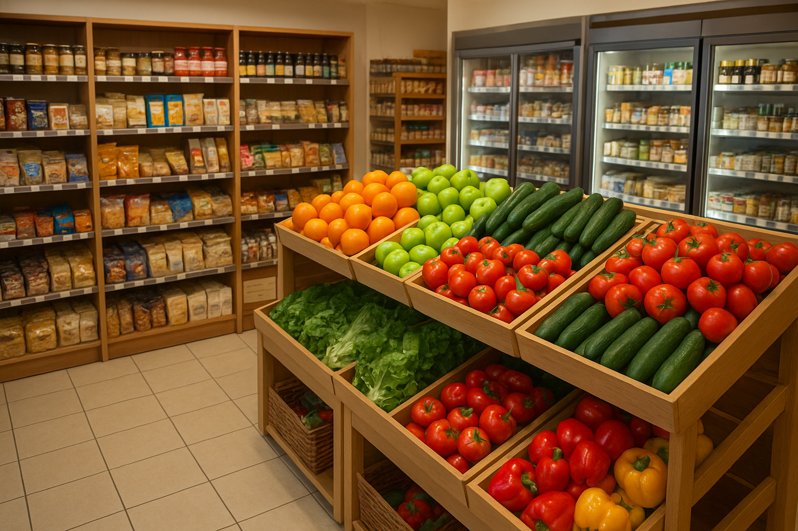

GROCERY SHOP
INTRODUCTION TO SHOP
Welcome to our Grocery Shop! We are committed to providing fresh, high-quality fruits at affordable prices for all our customers. Our shop sources produce from trusted local farmers to ensure every item you purchase is nutritious, delicious, and handled with care.
| FRUIT | PRICE |
|---|---|
| Orange | Ksh 20 |
| Banana | Ksh 10 |
| Apple | Ksh 30 |
| Melon | Ksh 100 |